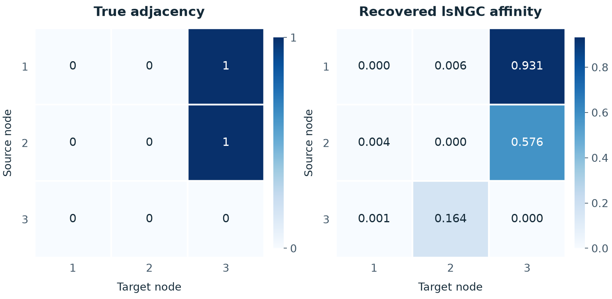

Large-scale nonlinear Granger causality for inferring directed dependence from short multivariate time-series data
Scientific Reports 11, 7817 (2021) · 10.1038/s41598-021-87316-6
Abstract
A key challenge to gaining insight into complex systems is inferring nonlinear causal directional relations from observational time-series data. Specifically, estimating causal relationships between interacting components in large systems with only short recordings over few temporal observations remains an important, yet unresolved problem. Here, we introduce large-scale nonlinear Granger causality (lsNGC) which facilitates conditional Granger causality between two multivariate time series conditioned on a large number of confounding time series with a small number of observations. By modeling interactions with nonlinear state-space transformations from limited observational data, lsNGC identifies casual relations with no explicit a priori assumptions on functional interdependence between component time series in a computationally efficient manner. Additionally, our method provides a mathematical formulation revealing statistical significance of inferred causal relations. We extensively study the ability of lsNGC in inferring directed relations from two-node to thirty-four node chaotic time-series systems. Our results suggest that lsNGC captures meaningful interactions from limited observational data, where it performs favorably when compared to traditionally used methods. Finally, we demonstrate the applicability of lsNGC to estimating causality in large, real-world systems by inferring directional nonlinear, causal relationships among a large number of relatively short time series acquired from functional Magnetic Resonance Imaging (fMRI) data of the human brain.
Abstract reproduced without changes from Wismüller et al. (2021), Scientific Reports. © The Author(s) 2021. Licensed under CC BY 4.0.
How it works
Form the history
Build lagged state vectors for a candidate source and for the remaining observed time series.
Represent nonlinearities
Find representative k-means centers and map the states through normalized radial basis functions.
Compare predictions
Fit one model using both representations and another using only the remaining time series.
Measure influence
Compare prediction errors and use the F-statistic to assess the source's directed influence on each target.
Based on the paper's Methods, equations (1)–(5), and Supplementary Information, section 2. Read the method.
A reproducible example

logistic_3.mat, realization 0, final 200 samples; lag order 1, k_f = 2, k_g = 2, k-means seed 123. Rows are sources; columns are targets. The recovered affinity is a continuous log ratio of prediction-error variances, with negative values and the diagonal set to zero. Generated with the current package; reproduce this figure.Use lsNGC
Python 3.10 or newer. Input arrays use one row per time series and one column per sample.
Install from the repository
git clone https://github.com/ali-vosoughi/Large-scale-nonlinear-causality.git
cd Large-scale-nonlinear-causality
python -m pip install -e .Run the bundled example
from lsngc import lsNGC
from lsngc.simulate import load_logistic3
series, truth = load_logistic3(n_samples=200)
affinity, f_statistic = lsNGC(
series, ar_order=1, k_f=2, k_g=2, seed=123
)The README documents the API, command line, and compatibility tests. The demo notebook repeats the repository's logistic benchmark.
Citation
Wismüller, A., Dsouza, A. M., Vosoughi, M. A., and Abidin, A. Large-scale nonlinear Granger causality for inferring directed dependence from short multivariate time-series data. Scientific Reports 11, 7817 (2021). DOI: 10.1038/s41598-021-87316-6.
@article{wismuller2021large,
title={Large-scale nonlinear Granger causality for inferring directed dependence from short multivariate time-series data},
author={Wism{\"u}ller, Axel and Dsouza, Adora M and Vosoughi, M Ali and Abidin, Anas},
journal={Scientific reports},
volume={11},
number={1},
pages={7817},
year={2021},
publisher={Nature Publishing Group UK London}
}